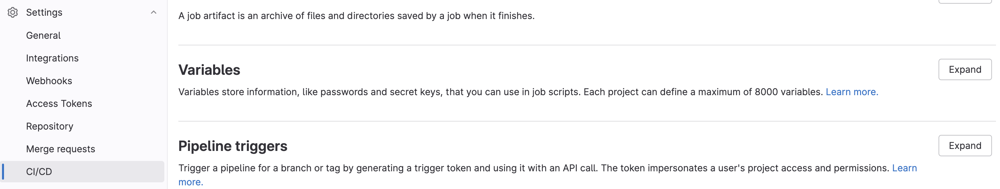

CI/CD Part 4: Container Registries
Building images and pushing to container registries
This is the last post in a mini-series on
designing Gitlab CI/CD pipelines. We’ve discussed the basic anatomy of a .gitlab-ci.yml file, how to set up authentication tokens and files for building and pushing packages to a registry, and designing a Dockerfile for building images from a package in the context of a CI/CD pipeline. In this post, I’m going to show how to push your package to a remote AWS Elastic Container Registry (ECR).
The structure of this CI/CD job will be analogous to the CI/CD job defined at the end of our first post, where we pushed an image to the Gitlab Container Registry.
Setting up AWS variables
To build images, tag them, and push them to the remote AWS ECR, I used the definition of a CI/CD job below. In addition to pre-defined variables that are set internally by Gitlab, we can also manually pre-define variables. In this case, I’ve set a few that allow me to interact with AWS via the command line:
AWS_DEFAULT_REGION: self-explanatoryECR_REPO_LAMBDA:${AWS_ACCOUNT_ID}.dkr.ecr.${AWS_DEFAULT_REGION}.amazonaws.com/${YOUR_ECR_REPO_NAME}AWS_ACCOUNT_ID: AWS account IDAWS_ACCESS_KEY: this is the information contained in the downloaded *.pem fileAWS_SECRET_ACCESS_KEY: this is the information contained in the downloaded *.pem file
To set variables that are accessible by CI/CD jobs, go to your Project/Group > Settings > CI/CD > Variables > Expand and define the variables of interest:


If you define these variables at the Gitlab Group level, they will be propagated down to the project level, so long as the Project falls under the Group scope.
Pushing to AWS ECR via CI/CD job
Below, we define the actual CI/CD job. There were two aspects here that I needed to solve. First, I needed access to a Docker-in-Docker build image e.g. an image that had Docker installed. And second, this image also needed to have the AWS CLI tool installed. To that end, I used the bentolor/docker-dind-awscli
image.
build-image-ecr:
stage: deploy
image: bentolor/docker-dind-awscli
services:
- docker:dind
variables:
# convenience variable indicating name of the image with respect to the ECR repo and unique tag ID
IMAGE_TAG: $ECR_REPO_LAMBDA:$CI_COMMIT_SHORT_SHA
before_script:
- docker info
# authenticate docker with your AWS ECR account
- aws ecr get-login-password --region $AWS_DEFAULT_REGION | docker login --username AWS --password-stdin $AWS_ACCOUNT_ID.dkr.ecr.$AWS_DEFAULT_REGION.amazonaws.com
# will push Docker image to AWS ECR
script:
# build the docker imagae
- docker build --compress -t ${IMAGE_TAG} .
# tag the image with a unique name
- docker tag ${IMAGE_TAG} $ECR_REPO_LAMBDA:latest
# push the image to the ECR
- docker push ${IMAGE_TAG}
# here, we only build and push the image if this is a merge event into the "main" branch
rules:
- if: $CI_PIPELINE_SOURCE == 'merge_request_event' && $CI_MERGE_REQUEST_TARGET_BRANCH_NAME == "main"
And voila! You have now pushed your built image to a remote container registry!